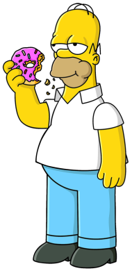

Homer Simpson
Homer is known as the father of the Simpson's family. he is a big fella, clumsy, crude and alcoholic type. depsite all these attributes he have, he is also a kind hearted man who care about his family. since is the main provider for his family, He works as a safety inspector at the springfield Nuclear Power Plant.